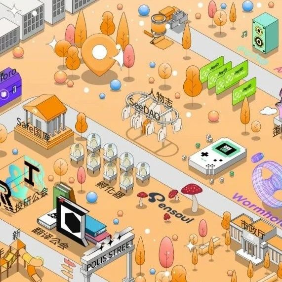
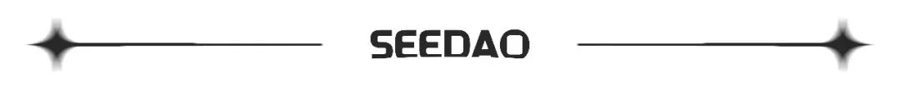

SeeDAO投稿 | 记录我和SeeDAO的重要时刻&顺便聊聊存在方式
作者: 赛斯的熊猫
关注Web3是很突然发生的事起初是因为我从去年冬天开始在Matters上再次活跃起来然后看到了很多数字游民


起初是因为我从去年冬天开始在Matters上再次活跃起来以至于我今年最想要做的事是去一趟清迈，无论什么形式但是意外的发现我非常认同SeeDAO的发起人唐晗的观点——主要是在她的X账号里很多帖子那么SeeDAO到底是什么呢，引用她的一段话，我觉得最适合新人了解“从一无所有的社区走向数字城邦，再到构建生态应用繁荣的公链，这个计划听上去十分疯狂，但在实践上又如此真实。与那些先拿到巨资开发公链的项目相比，我们的路径看似不同，却又殊途同归——一个是从技术走向社会，而一个是从社会走向技术。我们终将实现技术与社会的交汇，编织出这样一个网络社会。”距离获得我的SNS（SNS将是你在SeeDAO中的独有昵称，能够连接SeeDAO生态中的所有场景和应用）只差不到24小时啦！目前的水平是不知道这些东西底是什么，但是知道它们之间的关系和逻辑，觉得自己还是很不错！｡:.ﾟヽ(*´∀`)ﾉﾟ.:｡从昨天到今天，都对这个城邦感到兴奋，也真的好想像Matters里一些朋友写的那样——All in Web3！昨天我在下班的车里突然很感慨，我意识到下班后我常常很希望快点到家，然后我的大脑里突然跳出来四个字〖存在方式〗，大概就是因为我并不喜欢我当下的存在方式，我并不认同，我无法真的享受，所以我没有任何“流连忘返”，我想快点切换到另一个状态——比如尽快回到家。当然这其实不过是一种不喜欢的存在方式切换到了另一种不喜欢的存在方式。快乐是生命的本质，我一点都不会反对。但是，我也深刻明白，我们很多人已经远离了本质。昨天，我在路上，好像突然明白，我为什么一直都不快乐，不是我有病，不是我不乐观，不是我缺乏智慧，我不快乐就是因为我从来没有接受我自己的存在方式。
如果展开来说，就是我为什么不喜欢上班的时光，虽然10——19点，占据一天绝大部分的时间的时光，我为什么无论如何都无法感到快乐和享受。是因为我根本不喜欢那里我的存在方式，我不喜欢那里我和大家之间的关系状态，我不喜欢一家没有尊重和平等的公司。我不打算苦中作乐，虽然我们这里很多人苦中作乐，但我决定我不再刻意在此寻找快乐。
这样的人与人之间的合作方式，人与公司之间的合作方式，是很让人难受的。一个成熟的人并不是要学会如何喜欢上让自己难受的东西，那不是成熟更不是智慧，那是远离本质。而如果我们可以以更快乐和骄傲的姿态存在着，我们如果可以改变我们的存在方式，改变人与人之间，人与社会之间的协作方式，哪怕只有一点点进步，快乐可能都会瞬间回来。
我并不是说只有一个理想的环境，人在其中才能快乐。而是想说，我真的不想，至少我个人真的不想要再继续存在于这样的存在里而无动于衷了。我并不觉得真的存在什么理想环境，完美状态，如果有，那我想描述为，我想存在的环境是和一群有着某种美好信念一起并携手创建新世界的人在一起。而今天的生活之所以令人失望，是因为，过程没有以任何可能的模样出现在眼前。我并不想把我的渴望和理想灌注在SeeDAO又或者Web3，它们其实都无需承载更多人个人的所求和欲望。
但是，很感谢SeeDAO，让我有看到，我渴望的那个过程。
这篇文章是在一种内心很兴奋而激动的状态下写的，很久很久没有这样的写作状态了。
当我开始更加理解自己的时候，我也开始更加爱自己，也许理解是需要在爱前面的，即便是自己对自己，也很难无条件地去爱。
想要投身理想，投身过程，想要贡献我的力量，想要参与新世界的建设，想要成为伟大城邦的一员。
人，真的值得一个更好的世界啊，我们，真的值得更好的存在方式啊。这篇文章就作为旧世界的我，首次瞭望到新世界的记录文章吧。这个世界，好像是扁平的，我们好像同处于一个世界，但其实不是。不同的生活方式的一群人就可以构建出一个属于他们的共同的世界，不同世界的人可能会遇到，但彼此却仍然在自己的世界，哈哈，真的很奇妙，非常有一种，奇妙的科幻感，但这种【科幻】其实已经存在于我们的世界了。或许，进入新世界，并不是从知道了Web3，知道了SeeDAO，又或者拥有了什么SNS或身份，才算得上新世界的人。新世界，就是理想世界，就是你处于你喜欢的存在方式的那个世界。甚至不需要了解任何金融，技术，概念......仅仅是你存在于你喜欢的方式。
